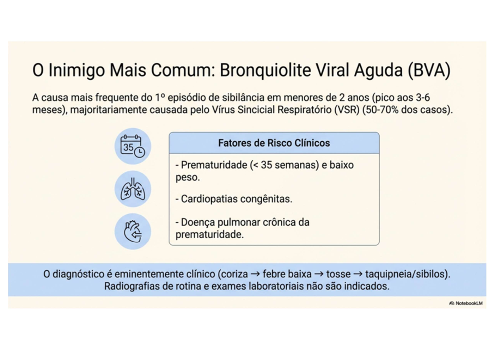
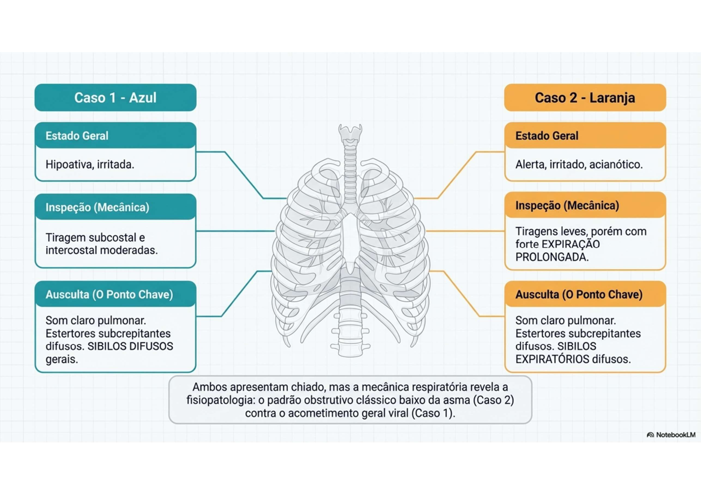
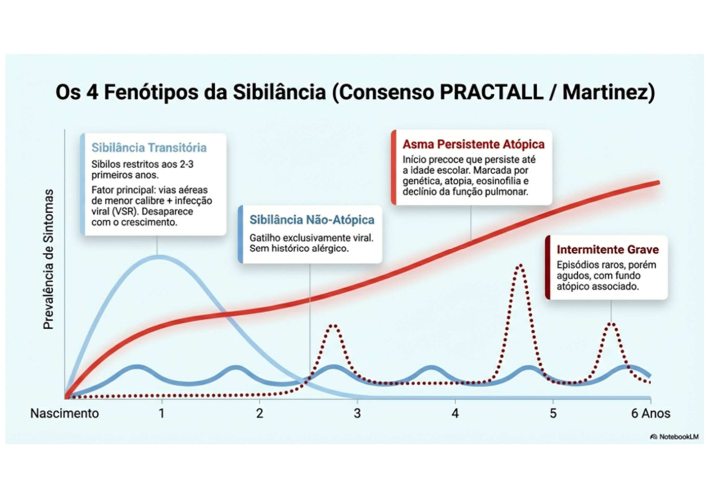
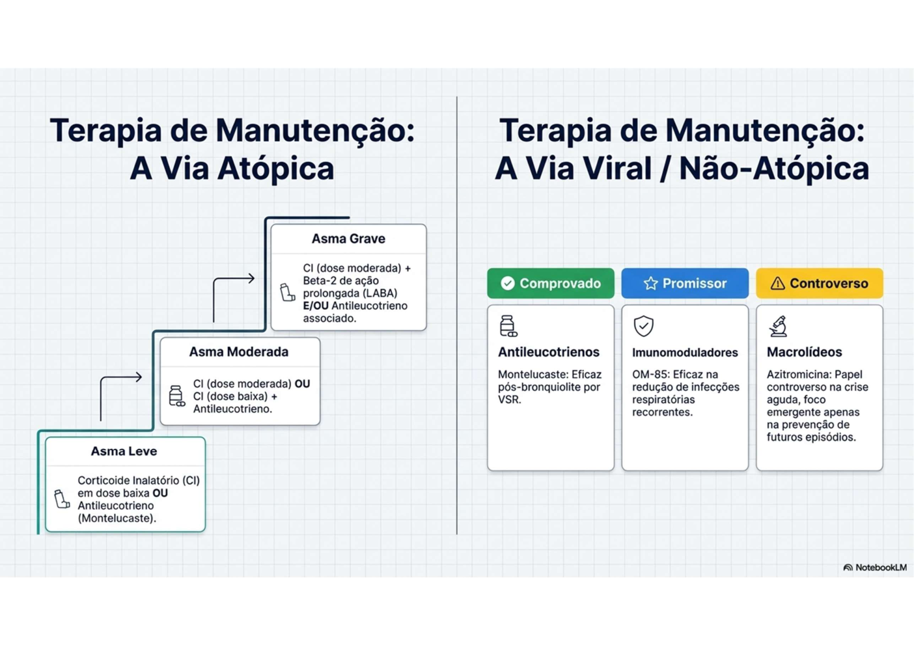

Bronquiolite × Lactente Sibilante × Asma
ESTAÇÃO 1 — Caso Clínico: 4 Meses, Primeiro Episódio de Sibilância


[CASO]: Lactente de 4 meses, sexo masculino, previamente hígido. Há 4 dias: coriza hialina, espirros, febre baixa. Há 2 dias: tosse seca, irritabilidade, inapetência, piora do desconforto respiratório. Nega episódios prévios de sibilância.
Exame físico: Peso 6,2 kg | FC 162 bpm | FR 64 ipm | T 37,5°C | SatO₂ 90% Tiragem intercostal e subcostal + sibilos difusos bilaterais + estertores grossos + tempo expiratório prolongado
Bronquiolite Viral Aguda (BVA). Critérios: primeiro episódio de sibilância em lactente <24 meses, precedido por quadro de IVAS (pródromo 2–5 dias), com sibilância e tiragem. Agente mais frequente: Vírus Sincicial Respiratório (VSR).
O diagnóstico é clínico. Não é necessária radiografia de tórax nem exames laboratoriais de rotina.
- RX tórax: somente se evolução desfavorável, suspeita de complicação (atelectasia) ou outro diagnóstico
- Oximetria: monitorar hipóxia
- Swab nasal para VSR: somente para fins epidemiológicos ou internação
Tratamento de suporte:
- Hidratação adequada (via oral se possível; sonda/EV se não aceitar)
- Oxigênio suplementar se SatO₂ <92% (cateter nasal 2 L/min)
- Desobstrução nasal: soro fisiológico nasal
- Posicionamento: cabeceira elevada 30°
- NÃO usar: broncodilatadores (sem evidência), corticoides, antibióticos (salvo infecção bacteriana secundária)
Critérios de internação:
- SatO₂ <92% em ar ambiente
- Desconforto respiratório moderado-grave
- Alimentação <50–75% da ingesta habitual
- <3 meses de vida ou comorbidades (cardiopatia, imunodeficiência, prematuridade)
- Apneia
ESTAÇÃO 2 — Caso Clínico: 9 Meses, Episódios Recorrentes

[CASO]: Lactente de 9 meses, sexo masculino. Chiado no peito e respiração difícil há 2 dias após coriza e febre baixa. Internação por bronquiolite aos 6 meses + 2 episódios de sibilância prévios. Irmão mais velho com rinite alérgica.
Exame: Peso 8 kg | FC 140 bpm | FR 45 irpm | T 36,5°C | SatO₂ 94% Tiragem subcostal e intercostal leves + expiração prolongada + sibilos expiratórios difusos
Lactente Sibilante — sibilância recorrente (≥2 episódios no mesmo ano ou ≥3 no total em <2 anos). Diferente da BVA (primeiro episódio).
| Fenótipo | Característica | Prognóstico |
|---|---|---|
| Episódico viral | Sibilância somente com infecções; assintomático entre crises | Maioria remite na idade escolar |
| Episódico frequente | ≥4 crises/ano ou persistência entre crises | Investigar atopia, iniciar profilaxia |
| Multi-gatilhos | Sibilância com vírus, exercício, alérgenos, fumaça | Maior risco de asma persistente |
- Broncodilatador (salbutamol/albuterol) inalatório: indicado em lactentes sibilantes com resposta prévia documentada
- Se recorrente e comprometimento: avaliar profilaxia com montelucaste ou budesonida inalatória
ESTAÇÃO 3 — Diagnóstico Diferencial: Asma


- Asma é o diagnóstico preferencial a partir dos 5–6 anos (quando é possível realizar espirometria)
- Em menores de 5 anos: diagnóstico é clínico/presuntivo ("sibilância recorrente")
- Sibilância recorrente + resposta a broncodilatador + exclusão de outras causas
- Espirometria com prova broncodilatadora (VEF₁ aumenta ≥12% após broncodilatador) — a partir de 5–6 anos
- Antecedentes atópicos pessoais ou familiares
- Crise leve-moderada: broncodilatador de curta ação (SABA) — salbutamol 2–4 puffs a cada 20 min por 1h
- Crise grave: SABA + corticoide sistêmico (prednisolona 1–2 mg/kg/dia)
- Controle (profilaxia): corticoide inalatório (budesonida, beclometasona) ± montelucaste
Tabela Comparativa — Diagnóstico Diferencial
| Característica | Bronquiolite (BVA) | Lactente Sibilante | Asma |
|---|---|---|---|
| Idade | <24 meses | <2 anos | ≥5–6 anos (preferencialmente) |
| Episódios | 1º episódio | ≥2 episódios | Recorrente, com intervalo assintomático |
| Agente | VSR (principal), rinovírus | VSR, rinovírus | Alérgenos, exercício, vírus |
| Padrão | Sazonalidade (outono/inverno) | Variável | Variável |
| Resposta a broncodilatador | Controverso / geralmente não | Variável (alguns respondem) | Sim (critério diagnóstico) |
| Corticoide na crise | Não indicado | Variável | Sim (sistêmico nas crises) |
| Tratamento principal | Suporte | Suporte + SABA nas crises | SABA crise + corticoide inalatório manutenção |
Fatores de Risco para BVA Grave
- Prematuridade (IG <32 semanas)
- Idade <3 meses
- Cardiopatia congênita
- Displasia broncopulmonar
- Imunodeficiência
- Tabagismo passivo
- Ausência de aleitamento materno
Pontos que o Professor Vai Checar
Alertas OSCE ⚠️
- Apneia pode ser a PRIMEIRA manifestação da BVA — especialmente em prematuros e <3 meses
- Não usar antibióticos na BVA (infecções bacterianas secundárias são raras)
- Diagnóstico clínico — não pedir RX de rotina (só em evolução desfavorável)
- VSR: transmissão por contato direto e gotículas >5 micra — lavagem de mãos é a principal prevenção
- Asma preferencial: ≥5 anos; em menores usar "sibilância recorrente" ou "lactente sibilante"
Fonte
- Gerado a partir de:
conteudo_ivas.md(Aula 08 — IVAS incluindo bronquiolite viral aguda) - Complementado com:
conteudo_bronquiolite_x_lactente_sibilnate_x_asma.md(Caso 1: 4 meses / Caso 2: 9 meses com histórico de 3 episódios) - Gaps identificados: tratamento detalhado da asma e critérios diagnósticos em menores de 5 anos complementados com conhecimento geral (GINA 2023 / SBPT)